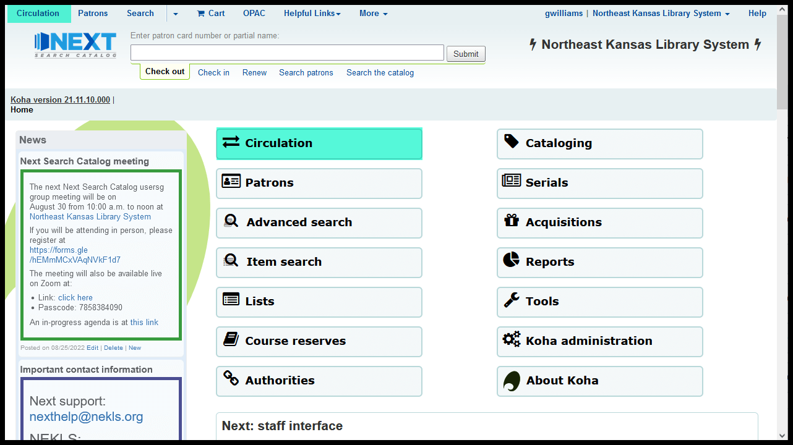
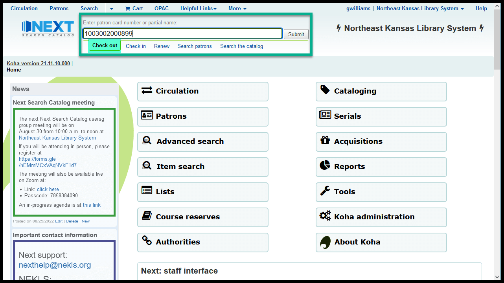

Checking out items
Finding check out
Finding checkout
- The main check-out menu can be found from the circulation menu:

- From the circulation menu, the check-out menu is the top item on the left:

- The check-out menu is incredibly simple:

- Checkout is one of the options on the flexible search bar in these menus:
- Circulation
- Patrons
- Advanced search
- Item search
- Lists
- Course reserves
- Cataloging
- Serials
- Reports
- Tools
- Koha administration
Normal check out
To check items out:
Scan the borrower’s library card number in the flexible search bar that’s set to “Check out”
- You can also type in a card number to look up a borrower’s account
- You can also type in a name to search for a borrower

Scan an item barcode in the “Enter item barcode” input box
- You can also type in an item barcode number

- The “Checked out” area will update with the title and barcode number of the item and the item’s due date

The “Checkout(s)” table
- The “Checkout(s)” table appears on the “Checkout(s)” tab under the “Checking out to …” box
- If the “Checkout(s)” table does not appear you may need to click the “Show checkouts” button
- You can make the “Checkout(s)” table appear by default by checking the checkbox that says “Always show checkouts immediately”
Checkout settings
- Due dates follow the circulation rules established for your library
- Staff have the ability to set a specific due date if necessary
- The specific due date must be set before you check an item out
The specified due date will remain in effect until either
- You click the red “X” next to the specified due date
- OR
- You switch to a different borrower

The “Use this date until the browser is closed” checkbox will specify this due date for every borrower that you check out items to until either
- You un-check the checkbox and click on the red “X” next to the specified due date to clear it
- OR
- You close the browser and re-start

Renewing an item through check-out
- If you scan an item that is already checked out to the current borrower, the system will ask you to confirm that you want to renew that item

Scanning a library card number at check-out
- If you scan an active library card in the “Enter item barcode” input box, the system should automatically switch you to the new borrower

Clear screen icons
When you’ve finished checking items out to a borrower, a great deal of confidential information is left on the screen. The best practice is to clear the screen after you’ve finished checking materials out to the borrower.
- To clear the screen, click the “X” icon on the right hand side of the “Checking out to …” area

- The printer icon to the left of the “X” serves two functions
- It prints the “Receipt-today’s checkouts” receipt when clicked
- It also clears the confidential data from the screen
Printing options at check out
- There are 3 print options for check out
- “Full page summary” prints an 8 1/2 x 11 summary of current checkouts and account information
- “Receipt-all checkouts” prints a receipt sized list of all items the borrower currently has checked out
- “Receipt-today’s checkouts” prints a receipted list of the items the patron has borrowed today

Obstacles to checking items out
Checkout blocked by circulation rules
- If the circulation rules at your library don’t allow the patron to borrow the item you’re trying to check out, you will see a message similar to this one
- This block can be overridden by some library staff
- How you proceed will depend on the situation and on the policies and procedures at your library

Checkout blocked: not-for-loan status
- If the item has a “Not for loan” status, you will see a message similar to this one
- This block can not be overridden by library staff - the only way to get around it is to change the not-for-loan status or item type of the item
- All items cataloged with the following item types are, by default, considred to have a not-for-loan status:
- E-content : Digital content
- E-content : E-learning course
- Reference material

Checkout blocked: item already checked out to someone else
- If an item is checked out to one borrower and you try to check it out to a different borrower, you should see a message similar to this one
- This block can be overridden by some library staff
- How you proceed will depend on the situation and on the policies and procedures at your library

Checkout blocked: un-triggered request
- If a borrower has placed a request on a title and that request has not been triggered, you should see a message similar to this one
- This block can be overridden by some library staff
- How you proceed will depend on the situation and on the policies and procedures at your library
Checkout blocked: on hold in transit
- If a borrower has placed a request on a title and the item has already been shipped to another library, you should see this message
- This situation usually means that someone made a mistake when checking an item in
- This block can be overridden by some library staff
- How you proceed will depend on the situation and on the policies and procedures at your library

Checkout blocked: on hold wating for someone else
- If you try to check out an item from the hold shelf to a library card other than the one that has requested it, you should see this message
- One of the most typical causes of this message is when one member of a family places a request and asks a different family member to pick up the item
- This block can be overridden by some library staff
- How you proceed will depend on the situation and on the policies and procedures at your library
Checkout blocked: barcode not found
- If an item is not in the catalog, you should see this message
- One cause of this error is if you accidentally scan the wrong barcode on an item
- Another cause is when an item has been deleted from the system and then finds its way back onto the library’s shelves
Video on YouTube
Watch “Checking items out” on YouTube
Go directly to the video on YouTube https://youtu.be/aJGVcMlK4Bg